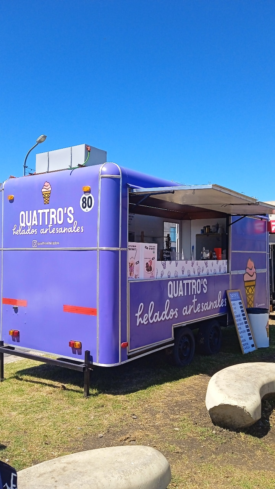
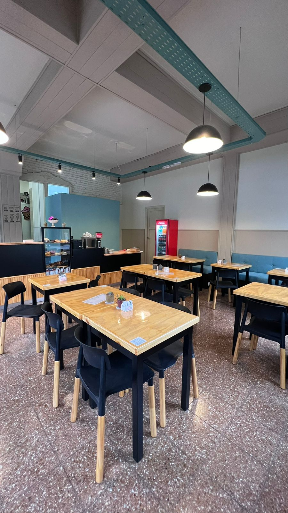

QUIÉNES SOMOS

2022
El Comienzo
DESDE UN FOODTRUCK EN 2022
"Un sueño sobre ruedas"
Todo comenzó con una pasión compartida por los sabores auténticos y la calidez de un buen café. En 2022, salimos a las calles con nuestro icónico foodtruck violeta, llevando helados artesanales y café de especialidad a cada rincón de la ciudad.
Lo que empezó como un proyecto nómade pronto se convirtió en un punto de encuentro para amigos y familias que buscaban ese "deseo" especial en cada bocado.
INAUGURACIÓN EN MAR DEL PLATA — 2024
El hogar de Quattro's
Dos años después, el sueño creció y encontró su lugar frente al mar. En 2024 abrimos las puertas de nuestro primer local en Mar del Plata, diseñado para ser un refugio de calma y dulzura.
Nuestra arquitectura combina la elegancia de la pátisserie europea con el espíritu vibrante de nuestra costa. Un espacio donde cada detalle, desde la textura de nuestras cremas hasta la madera de nuestras mesas, cuenta nuestra historia.

"No solo servimos helados y café, creamos momentos que se quedan guardados como el mejor de los recuerdos."
Pedí tu deseo.
Padre Dutto y 12 de Octubre, Mar del Plata.
Lun–Vie 08:30–19:00 · Sáb 09:30–13:00 · Dom cerrado